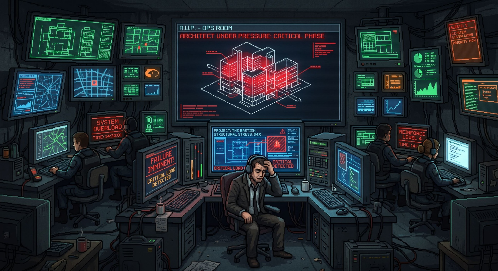

Architect Under Pressure
Decision 1 of 5
Checkout p95: 4.8s | Error rate: 9% | Cloud SQL CPU: 96% | Cloud Run CPU: 41%

[ Pixel Art: Dark Ops Room ]REL: 50
SEC: 50
CST-EFF: 50
SPD: 50
JUD: 50
Loading...